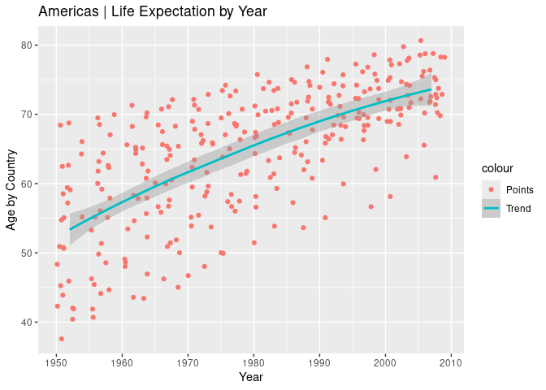
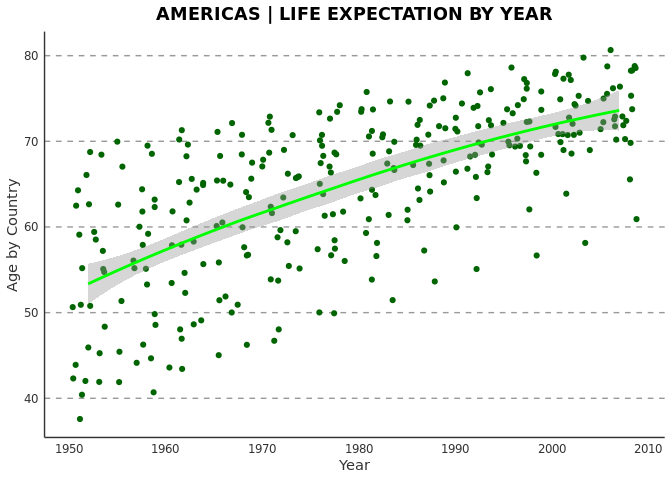

The ggaoc package provides a theme, palette, and other useful functions to customise ggplots and give them a Alexandria Ocasio Cortez inspired look.
What
Here an example.
Before:
library(gapminder)
library(ggplot2)
americas <- gapminder[gapminder$continent == "Americas",]
ggplot(americas) +
geom_jitter(aes(year, lifeExp, colour = "Points")) +
geom_smooth(aes(year, lifeExp, colour = "Trend")) +
labs( # Use insprired labels
title = "Americas | Life Expectation by Year",
x = "Year",
y = "Age by Country"
)
#> `geom_smooth()` using method
#> = 'loess' and formula = 'y ~
#> x'
After:
library(gapminder)
library(ggplot2)
library(ggaoc)
theme_set(theme_aoc()) # Set the theme
#> Loading required namespace: showtext
#> Loading required package: sysfonts
#> Loading required package: showtextdb
americas <- gapminder[gapminder$continent == "Americas",]
ggplot(americas) +
geom_jitter(aes(year, lifeExp, colour = "Points")) +
geom_smooth(aes(year, lifeExp, colour = "Trend")) +
scale_color_aoc() + # Use insprired colors
labs_aoc( # Use insprired labels
title = "Americas | Life Expectation by Year",
x = "Year",
y = "Age by Country"
)
#> `geom_smooth()` using method
#> = 'loess' and formula = 'y ~
#> x'